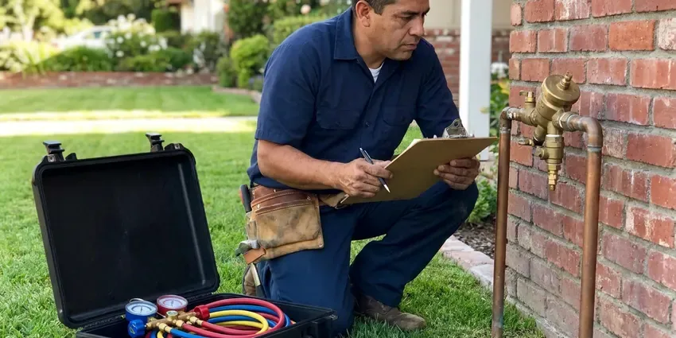

Drains Camera Inspection in St. Albans, VT
For lasting solutions to drainage problems in St. Albans, VT, CKV Plumbing uses advanced camera technology to locate and identify issues quickly.
- Experienced Plumbers
- Fast, Accurate Diagnostics
- Clear, Plain-English Reports
- No-Dig Inspections

Know Before You Dig With a Drain Camera Inspection in St. Albans, VT.
Contact CKV Plumbing today for reliable, non-invasive drain problem diagnosis.
Your Go-To for Drains Camera Inspection in St. Albans, VT
CKV Plumbing provides modern drains camera inspection services across St. Albans, VT. This diagnostic tool allows us to visually inspect the interior of your drain and sewer lines, identifying blockages, damage, or other issues without invasive digging.
Our expertise includes:
- HD self-leveling camera inspection of 1.5 to 8 inch lines
- Sonde locating to mark defect location and depth on surface
- Find lost items or debris within pipes.

Additional Plumbing Maintenance Services in St. Albans, VT
Our maintenance and specialty plumbing services in St. Albans, VT catch small problems before they become emergencies.


Customers
Why Choose CKV Plumbing for Drains Camera Inspection in St. Albans, VT?
Choosing CKV Plumbing for your drains camera inspection means you're getting a clear, accurate picture of your plumbing system's health. We provide detailed reports and honest recommendations based on our findings.
- Exact Locating, A built-in transmitter lets us mark the problem spot and its depth from the surface.
- HD Footage, Our cameras record sharp, well-lit video that clearly shows pipe condition.
- Non-Invasive, No need for destructive digging or extensive disruption, as our camera navigates through existing access points.
Citywide Coverage
No matter where you are in St. Albans, VT, our plumbers are equipped to bring our specialized drain camera inspection services directly to you. We understand the plumbing challenges across the whole metro area.
Experienced Team
Our camera technicians have reviewed thousands of feet of pipe footage. They can tell a minor scale deposit from a serious crack and know which findings need quick attention.
Safety-First Approach
We introduce the camera through existing cleanouts or fixtures whenever possible, so no digging or cutting is needed. Any cleanout cap we open is resealed to keep sewer gas out.
Trusted Certified St. Albans Plumbing Services Professionals
At CKV Plumbing, we take pride in providing licensed, certified plumbing services throughout St. Albans, VT. Backed by leading industry credentials, our experienced plumbers combine technical skill with genuine customer care. Whether it is repair, installation, or maintenance, we follow strict safety and quality standards to deliver long-lasting results you can trust.
Call Us Now PHCC Plumbing Contractor Recognition
PHCC Plumbing Contractor Recognition Better Business Bureau (BBB) Accreditation
Better Business Bureau (BBB) Accreditation Angi Certified Pro
Angi Certified Pro ISO 9001 Quality Management Certification
ISO 9001 Quality Management CertificationDetailed Drains Camera Inspection Services in St. Albans, VT
Identifying Tree Root Intrusion in St. Albans, VT
Tree roots are a common cause of drain issues in St. Albans, VT, especially with older homes surrounded by mature trees. Our camera inspections clearly show where roots have entered pipes, causing blockages and structural damage. We use high-definition cameras to distinguish between minor root hair intrusion and severe root balls that require hydro-jetting or even pipe replacement.

Drainage System Pre-Purchase Inspections in St. Albans, VT
When buying a home in St. Albans, VT, a pre-purchase drain camera inspection can save you from unexpected plumbing nightmares. We provide prospective buyers with a detailed report on the condition of the home's drainage system, identifying any existing or potential problems that might require significant investment after purchase. This insight allows you to make an informed decision and negotiate any necessary repairs.
Post-Repair Inspection in St. Albans
After a major drain repair or pipe replacement in St. Albans, a post-repair camera inspection confirms the work was done correctly and the pipes are fully functional. This gives you confidence in the quality of the repair and verifies that no new issues were introduced during the process. It's an important quality control step we often recommend.
Post-Repair and Post-Jetting Verification in St. Albans
After a root cutting, hydro jetting or pipe repair, a follow-up camera pass confirms the work was done right. You see that the roots are gone, the grease is cleared or the new section is properly aligned. This step gives peace of mind and documents the condition for future reference. It is also helpful when a warranty or landlord agreement requires proof.
Camera Inspection Cost vs. Exploratory Digging in St. Albans, VT
A camera inspection usually costs a few hundred dollars, while exploratory digging can run much higher and still miss the problem. With a camera and locator, we know where to dig and how deep before a shovel touches the ground. That keeps excavation small and restoration costs low. Many homeowners find the inspection more than pays for itself.
Residential Drain Inspections in St. Albans
For homeowners in St. Albans, our residential drains camera inspection service is well suited for diagnosing recurring clogs, slow drains, or foul odors. We use flexible cameras that can navigate through various pipe diameters and bends, providing a clear view of issues like grease buildup, hair clogs, or even broken pipes. This service is crucial before purchasing an older home to assess the condition of its plumbing, especially in neighborhoods with aging housing.
Identifying Specific Pipe Damage in St. Albans
Our drain cameras are equipped to identify many types of pipe damage in St. Albans, including hairline cracks, full pipe fractures, pipe corrosion from hard water or age, and bellied pipes that collect debris. We can also detect foreign objects lodged in the system. Knowing the exact type of damage allows us to recommend targeted solutions, such as spot repairs, pipe lining, or full pipe replacement, minimizing disruption and cost.

Locating Lost Items with Camera in St. Albans, VT
Accidentally dropped a valuable ring or small toy down a drain in St. Albans, VT? Our drain camera can often locate and help retrieve lost items without having to dismantle entire plumbing sections. The precise visual guidance allows our technicians to find the item's location and attempt retrieval, saving you from costly pipe disassembly or loss.
Drains Camera Inspection Near Me in St. Albans, VT
CKV Plumbing is your trusted local expert for drains camera inspection in the St. Albans area. We pride ourselves on providing prompt, professional service, so your plumbing problems are accurately identified and effectively resolved. Don't let recurring clogs frustrate you any longer, call us for a clear diagnosis.
If you're searching for 'drains camera inspection near me' in St. Albans, VT, look no further than CKV Plumbing. Our local team is positioned to respond quickly to your plumbing needs, using advanced diagnostic tools to resolve your drainage issues efficiently. We understand the challenges faced by homeowners and businesses in our community.
CKV Plumbing at a Glance
- Fully licensed plumbing team covering St. Albans, VT
- 24/7 emergency service with same-day scheduling
- Upfront, flat-rate pricing before work begins
- 4.8-star rated by 553+ Vermont customers
St. Albans Map
St. Albans Information
- Population
- 6,935
- Area codes
- Local
- Service area
- St. Albans and communities within 40 miles
- Nearby
- Essex Junction, Winooski, Burlington, South Burlington
For homes in St. Albans, VT, a drains camera inspection is valuable because tree roots from mature landscaping and shifting soil can damage older pipe systems.
Expert Services
Trust our professionals for reliable CKV Plumbing solutions in St. Albans, VT.
Our Specialized Plumbing Services in St. Albans, VT
At CKV Plumbing, we provide a complete range of plumbing services across St. Albans, VT. From leak detection to full system installations, our team ensures fast, precise, and affordable service for both residential and commercial properties. Explore our core services below:


How Our Drains Camera Inspection Service Works in St. Albans, VT
Our camera inspection process is fast, clean and designed to give you clear, usable answers.
Request a Quote
Call (802) 209-5139 and tell us whether you need a sewer scope, a drain diagnosis or a pre-purchase inspection. We confirm the price and book a visit.
Run the Camera
We insert the camera through a cleanout or fixture and record the full run of pipe. Any defect is located and marked on the surface.
Review the Footage
We walk you through the video and explain each finding in plain language. You receive the recording and recommendations for any repairs.
Frequently Asked Questions About Drains Camera Inspection in St. Albans
The cost of a drains camera inspection in St. Albans, VT typically ranges from $250 to $600. This price can vary depending on the length and accessibility of the pipes needing inspection, as well as the complexity of the issue. We provide a clear quote before any work begins.
We use professional-grade, high-resolution waterproof sewer cameras from reputable brands like Wohler, MyTana, and Ridgid. These cameras are equipped with powerful LED lights for clear visibility and often include self-leveling heads to maintain an upright image, for accurate diagnostics.
No, a drain camera inspection is a non-invasive and clean process. We typically access your pipes through existing cleanouts, which are usually located outside or in a basement. There's no need for digging or demolition, limiting disruption to your home or business in St. Albans.
Yes, especially for homes built before the 1980s with clay or cast iron pipe. Most Vermont homes have full basements, many with fieldstone or older foundations that can let in water during wet seasons. A scope costs little compared with the repair it can reveal.
Cameras reveal roots, cracks, offset joints, bellies, corrosion, grease buildup and collapsed sections. They also show foreign objects and improper connections. Each finding helps decide whether cleaning or repair is needed.
Yes. Tree root intrusion and aging sewer lines cause trouble in many neighborhoods. Most Vermont homes have full basements, many with fieldstone or older foundations that can let in water during wet seasons. A camera inspection is crucial for accurately diagnosing these local challenges.
Common reasons include repeat clogs, slow drains throughout the house, sewage odors and buying an older home. Inspections are also useful before remodels or after tree root problems. If a plumber recommends an expensive repair, a camera verifies the need.
Our drain camera inspection service itself is a diagnostic tool, so it doesn't carry a specific warranty on the service. However, any later repair work recommended and performed by CKV Plumbing will come with its own warranty, giving you confidence in our workmanship and parts.
What People Are Saying About Our Plumbing Experts?

Emily R.
I called CKV Plumbing for plumbing repair, and the technician was fast, polite, and thorough. They explained the problem clearly and fixed it the same day. I will definitely hire them again. Highly recommended!
Plumbing Repair · Winooski, VT
Patricia H.
We had a slab leak that two other companies could not find. CKV Plumbing located it in under an hour, explained our options, and the price matched the quote to the dollar.
Slab Leak Repair · Burlington, VT
Laura S.
I scheduled a water heater replacement, and the team made the process smooth and affordable. The new unit works perfectly, and they cleaned up after completing the job.
Water Heater Replacement · Montpelier, VT
Daniel K.
A pipe burst at 11 pm and they actually answered. The plumber showed up within the hour, shut everything down, and had us back to normal the next morning. Could not ask for more.
Emergency Plumbing · St. Albans, VT
Mark T.
When our office needed drain cleaning, CKV Plumbing provided quick, reliable service. The plumber arrived on time and made sure every drain flowed perfectly before leaving. Very satisfied.
Drain Cleaning · South Burlington, VTSofia M.
Two new toilets installed in one visit, no mess left behind, and the tech even adjusted a faucet he noticed was dripping. Fair pricing and really friendly.
Toilet Installation · Winooski, VT